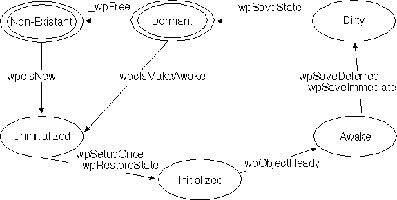

A Workplace Shell object can exist in two states:
The wpSaveState method will save the value of certain instance variables to a persistent storage location. The wpRestoreState method will restore these values for a newly awakened object. The Workplace Shell uses these methods to maintain important instance data for each object. If you write a subclass of a Workplace Shell class that includes its own new instance data, you must override these methods to ensure that the new instance data values are saved/restored along with the rest of the object's data.
The following events trigger the Save/Restore methods:
The following figure shows the life cycle of an object:
If you are implementing a subclass of a Workplace Shell class with its own instance variables that are supposed to persist, override wpSaveState and wpRestoreState. In the override for wpSaveState, call wpSaveData, wpSaveLong, or wpSaveString, for each piece of data you want saved, depending on the type of each piece of instance data associated with the object. Likewise, the override for wpRestoreState should call wpRestoreData, wpRestoreLong, or wpRestoreString, for each piece of data to be restored.
The wpSaveState and wpRestoreState methods use a key to identify each piece of data for an object. This key is made up of the class name and a unique ULONG. Together, this key should uniquely identify a given piece of data for the object. For user-defined subclass instance data, assign a ULONG to each piece of data. Supply that ULONG along with your class name to wpSaveData, wpSaveLong, or wpSaveString, when saving that piece of data. Likewise, supply that ULONG along with your class name to wpRestoreData, wpRestoreLong, or wpRestoreString, when restoring that piece of data.